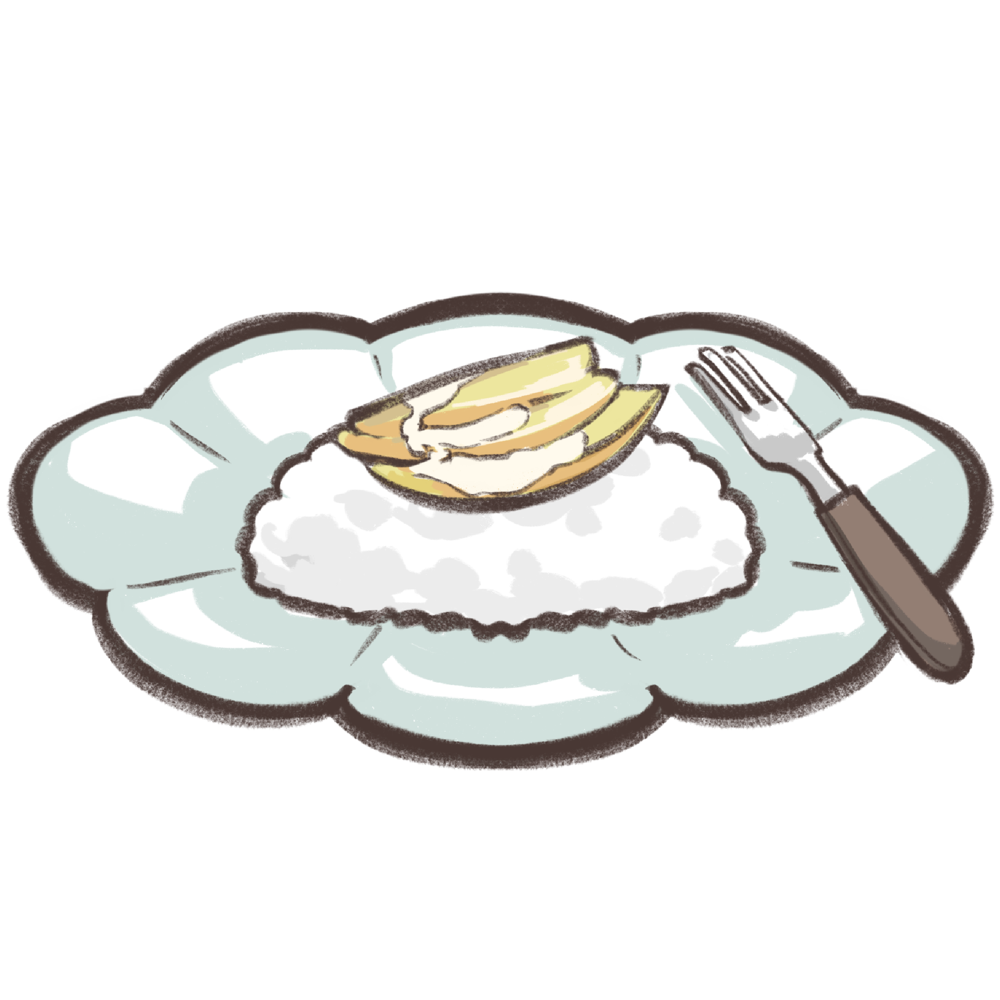

Ingredients
- Coconut milk270 ml
- Caster sugar2 tbsp
- Saltany
- Large mango1
- Long-grain rice200 g
Mango sticky rice is a traditional Southeast Asian and South Asian dessert made with glutinous
rice, fresh mango and coconut milk, and eaten with a spoon or the hands.
How to cook:
| 1. | Place rice in a bowl. Cover with cold water. Set aside overnight to soak. Drain. Line the base of a bamboo steamer with non-stick baking paper. Spread rice over the base and place over a saucepan of simmering water. Steam, covered, for 25-30 minutes or until rice is tender and translucent. |
| 2. | Meanwhile, place coconut milk, sugar and salt in a saucepan over medium heat. Stir until sugar dissolves and coconut milk is heated through (do not boil). |
| 3. | Transfer the rice to a large bowl. Add half the coconut milk mixture and stir to combine. Set aside for 5 minutes to stand. |
| 4. | Divide the rice among serving plates. Shape each portion into a 2cm-thick disc. Top with mango slices. Spoon over the remaining coconut milk. |